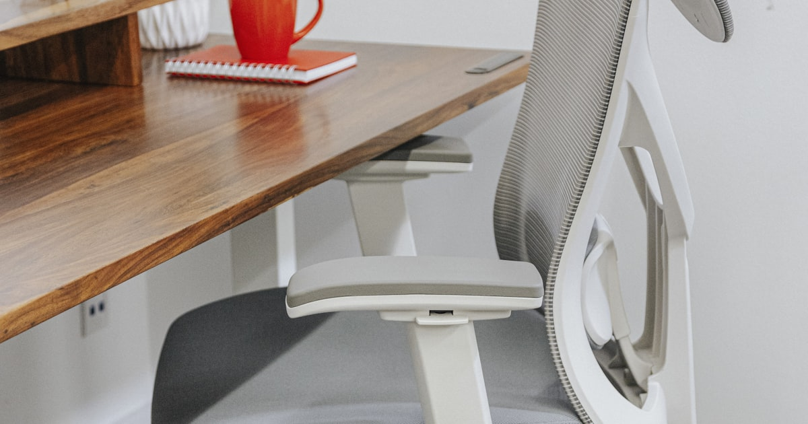

Ergonomische Bürostühle im Vergleich: Welche Preisklasse lohnt sich wirklich?

Foto: Unsplash
Zwischen 60 und 600 Euro ist bei Bürostühlen alles zu haben – aber der Preis allein sagt wenig darüber, ob dein Rücken nach acht Stunden noch mitspielt. Diese Kaufberatung vergleicht die drei gängigen Ausstattungsklassen und zeigt, welche Features den Aufpreis wert sind und welche reines Marketing sind.
Die drei Klassen im Überblick
| Klasse | Typische Ausstattung | Für wen | Preis |
|---|---|---|---|
| Einsteiger | Verstellbare Sitzhöhe, feste Rückenlehne, einfache Polsterung | Gelegentliches Home-Office, Übergangslösung | ca. 60–100 € |
| Mittelklasse Empfehlung | Lendenwirbelstütze, verstellbare Armlehnen, Wippmechanik | Regelmäßiges Home-Office (3–5 Tage/Woche) | ca. 100–200 € |
| Premium | Synchronmechanik, verstellbare Sitztiefe, Kopfstütze, 4D-Armlehnen | Vollzeit-Schreibtischarbeit, Rückenprobleme | ca. 200–350 € |
Einsteigerklasse
ca. 60–100 €Wer nur gelegentlich von zuhause arbeitet, kommt mit einem einfachen Modell aus – wichtig ist auch hier die verstellbare Sitzhöhe (Füße flach auf dem Boden, Knie im rechten Winkel). Was in dieser Klasse meist fehlt: eine echte Lendenwirbelstütze. Für lange Arbeitstage ist das auf Dauer die Schwachstelle.
Stärken
- Günstigster Einstieg, besser als jeder Küchenstuhl
- Reicht für 2–4 Stunden Sitzen am Tag
Schwächen
- Keine oder nur angedeutete Lendenwirbelstütze
- Nicht auf Dauerbelastung ausgelegt
* Affiliate-Link
Mittelklasse
ca. 100–200 € Unsere EmpfehlungAb etwa 100 Euro bekommst du die Ausstattung, die orthopädisch wirklich zählt: eine höhenverstellbare Lendenwirbelstütze, verstellbare Armlehnen (entlastet Schultern und Nacken) und eine Rückenlehne mit Wippmechanik, die Bewegung zulässt. Ein Netzrücken ist im Sommer angenehmer als Vollpolster – Geschmackssache, kein Qualitätsmerkmal.
Stärken
- Lendenwirbelstütze + verstellbare Armlehnen – die zwei wichtigsten Ergonomie-Features
- Bestes Preis-Leistungs-Verhältnis bei täglicher Nutzung
Schwächen
- Sitztiefe meist nicht verstellbar (relevant für sehr große oder kleine Personen)
* Affiliate-Link
Premium-Features
ca. 200–350 €Synchronmechanik (Sitz und Lehne neigen sich im festen Verhältnis mit), verstellbare Sitztiefe und 3D/4D-Armlehnen machen den Unterschied, wenn du täglich 8+ Stunden sitzt oder bereits Rückenprobleme hast. Für alle anderen ist das ein Komfort-Upgrade, kein Muss.
Stärken
- Passt sich an fast jede Körpergröße und Sitzposition an
- Höhere Gewichtsfreigabe, langlebigere Mechanik
Schwächen
- Deutlicher Aufpreis, den Gelegenheitsnutzer kaum spüren
* Affiliate-Link
Checkliste: Darauf kommt es beim Kauf an
- Lendenwirbelstütze: höhenverstellbar ist ideal – das wichtigste Einzel-Feature
- Armlehnen: mindestens höhenverstellbar, sonst hängen die Schultern
- Gewichtsfreigabe: sollte deutlich über deinem Körpergewicht liegen (Langlebigkeit)
- Prüfsiegel: GS-Zeichen oder ergonomiegeprüfte Zertifizierung als Qualitätsindiz
- Rückgaberecht nutzen: 2 Wochen probesitzen sagt mehr als jede Produktbeschreibung
Häufige Fragen
Wie viel sollte ein guter Bürostuhl fürs Home-Office kosten?
Für tägliche Nutzung liegt der Sweet Spot bei 100–200 Euro: In dieser Klasse bekommst du Lendenwirbelstütze, verstellbare Armlehnen und eine Wippmechanik. Teurer lohnt sich vor allem bei Vollzeit-Schreibtischarbeit oder bestehenden Rückenproblemen.
Was ist das wichtigste Feature bei einem ergonomischen Bürostuhl?
Die Lendenwirbelstütze – idealerweise höhenverstellbar. Sie unterstützt die natürliche Krümmung der unteren Wirbelsäule und hat den größten Effekt gegen Rückenschmerzen. An zweiter Stelle: höhenverstellbare Armlehnen.
Netzrücken oder Polster – was ist besser?
Geschmackssache, kein Qualitätsmerkmal. Netzrücken ist im Sommer luftiger, Vollpolster fühlt sich wertiger an. Entscheidend sind Lendenwirbelstütze, Verstellmöglichkeiten und Mechanik – nicht das Material der Lehne.
Fazit
Für die meisten Home-Office-Arbeitenden ist die Mittelklasse (100–200 €) die richtige Wahl: Lendenwirbelstütze und verstellbare Armlehnen decken 80 % der Ergonomie ab. Einsteigermodelle nur als Übergang, Premium nur bei Vollzeit-Sitzen oder bestehenden Beschwerden – und egal welcher Stuhl: regelmäßiges Aufstehen bleibt wichtiger als jedes Feature.